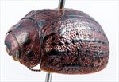
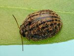
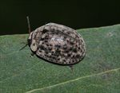
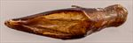
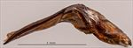
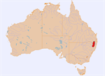

Click on images to enlarge

Female, Boonoo Boonoo, N.E. New South Wales

Male, Bookookoorara, N.E. New South Wales

Female, Glen Innes, N.E. New South Wales

Aedeagus, dorsal view (Boonoo Boonoo, N.E. New South Wales)

Aedeagus, lateral view (Boonoo Boonoo, N.E. New South Wales)

Distribution
Ta03
Name
Trachymela sp. Ta03
Reference specimen
2003-014a, Boonoo Boonoo, NE NSW
Adult Description
Length: ♂ 5.8–6.8 mm (n=28), ♀ 6.3–7.7 mm (n=34).
Colouration:
Head: Dark reddish-brown, region in front of clypeal suture often darker or even black, the sutures sometimes very narrowly darker also, mandibles concolorous with head with darker tip; antenna with antennomeres 1–3 yellowish-brown, then grading to slightly or considerably darker shade towards the apex.
Pronotum: Brown, concolorous with head, with four relatively small but well defined black patches, the outer ones centered on the foveae and the inner ones between fovea and centre, sometimes only two of these are present, more rarely all are absent.
Scutellum: Uniformly darker than pronotum, sometimes much darker or even black.
Elytra: Dark reddish-brown, concolorous with pronotum, humeral callus black, elytral disc studded with prominent black verrucae arranged in 9 or 10 longitudinal rows, many verrucae, particularly those within VR3, VR5 and VR7, are longitudinally extended, anterior half of VR3 usually in form of an uninterrupted black ridge, suture narrowly black from summit to apex.
Venter & Legs: Very dark-brown or black, sometimes legs fractionally lighter in shade, inside surface of elytral epipleura brown or with posterior half black, rarely completely black.
Cuticular Wax: Grey, relatively sparsely and uniformly distributed between the black verrucae, making the longitudinal rows of these verrucae even more prominent.
Morphology:
Head: Punctures moderately large (pd ≈ 1.5–2× ef) and quite evenly and densely packed, punctures sometimes confluent to form longitudinal ridges. Antennae short (AL/BL: ♂ 35–37%, ♀ 29–33%), filiform, with antennomeres 7–10 of females as broad as they are long.
Pronotum: Almost evenly curved transversely, rarely slightly explanate, foveal depression behind eye shallow to very shallow, always with a small round callus near its centre, and extends a considerable way towards centre of pronotal disc anteriorly, its inner edge marked by a fairly rapid elevation to level of disc and coincident with lateral extreme of inner black patch, puncturation usually clearly impressed, evenly distributed and moderately dense in discal area, becoming much more coarse in foveal and lateral regions. Front margins join lateral margins in a smoothly rounded right-angle, with lateral margin curving smoothly and gradually towards rear margin.
Scutellum: Surface smooth to slightly uneven, unpunctured, rarely with a scattering of indistinctly impressed small punctures.
Elytra: Surface evenly curved, covered throughout in large, densely and relatively evenly distributed punctures with convex interstices, much smaller punctures are scattered sparingly on the interstices; prominent raised verrucae, often longitudinally elongate, some with scattered fine punctures, are distributed over the surface in 9 or 10 longitudinal bands, adjacent verrucae in the same series often joined to form one long raised ridge, with this being most prominent in odd-numbered series, particularly VR3, VR5 and VR7, surface continuous under humeral callus, lateral margin of elytra straight. Vertical extension of epipleura small (HCE/PW = 0.32–0.36).
Venter: Prosternal process narrowest at front or almost parallel, lightly closed anteriorly, with a very light scatter of short setae throughout, mesoventrite with a few short setae, a single seta usually present on anterior and median trochanter; front edge of metaventrite beveled, truncate; inner edge of posterior of epipleurae lacking setae.
Male Genitalia (Aedeagus):
Dimensions: Moderate length (LPE/BL = 28–31%), lanceolate.
Dorsal view: Widest at rear with sides converging towards the tip in a slightly sinuous arc that is very slightly but noticeably concave a little before the apex making for a quite sharp tip, dorsal surface membranous with a very faint dorso-median channel present, ostium very small, tip triangular.
Lateral view: Sharply bent at 120° at about 40% of length from basal extreme, portion towards apex from bend rather thin and quite straight, tip deflexed.
Immature Stages
Unknown.
Similar species
Ta29: Rather similar and closely related to this species, but Ta29 is usually much darker in colour. In those individuals of Ta29 where the verrucae are arranged in linear series (southern populations), they are smaller and mostly round, contrasted with the larger and prominently longitudinally extended verrucae of Ta03. The aedeagus of Ta29 is quite similar in shape but lacks the slight concavity (in dorsal view) just behind the apex that makes the apex of Ta03 appear much sharper and it has a noticeable downward bend near the apex. Ta29 seems to prefer hosts in the Adnataria group of Eucalyptus (ironbarks and boxes), while Ta03 seems to prefer the “peppermint” group of species (however, the two have been found together on E. bridgesiana).
Ta105: This very similar species has a much more southerly distribution. It shares with Ta03 the same shape and dimensions of the aedeagus, though the concavity near the apex is often a little more pronounced and it tends to be very slightly sinuous in the central section viewed laterally. The most obvious distinguishing characteristics are that the elytral verrucae in Ta105 are only very rarely longitudinally joined into raised ridges. It is however entirely possible that Ta03 and Ta105 are allopatric populations of the same species.
Notes
Taxonomy: This species, along with Ta29 and Ta105, form a species complex whose members are very difficult to distinguish. Several species from Western Australia, including Ta154, also belong to this group.
Host Associations: Ta03 has been collected primarily from two groups within Eucalyptus. These are Eucalyptus radiata (Eucalyptus: Aromatica) with 9 records and a few species within the Symphyomyrtus: Maidenaria group (E. acaciiformis with 22 records and E. bridgesiana/nova-anglica with 2 records). Many records are from unspecified “peppermints”, which will likely be from these two groups. There are two records from stringybark species (Eucalyptus: Capillulus). A single record from E. blakelyi is likely incidental or a host misidentification.
Morphological Variation: The specimens recorded from stringybark are quite typical of Ta03 in external morphology, but the male [2018-044] has an aedeagus that is shorter but broader than is typical for a specimen of that size. It is possible that it is specifically distinct from Ta03.
Copyright © 2026. All rights reserved.
{kind=link}
{kind=link}
{kind=link}
{kind=link}
{kind=link}
{kind=link}